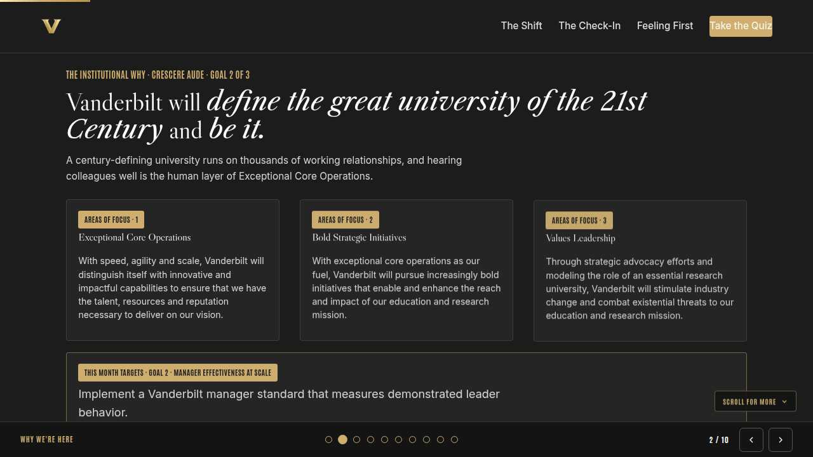
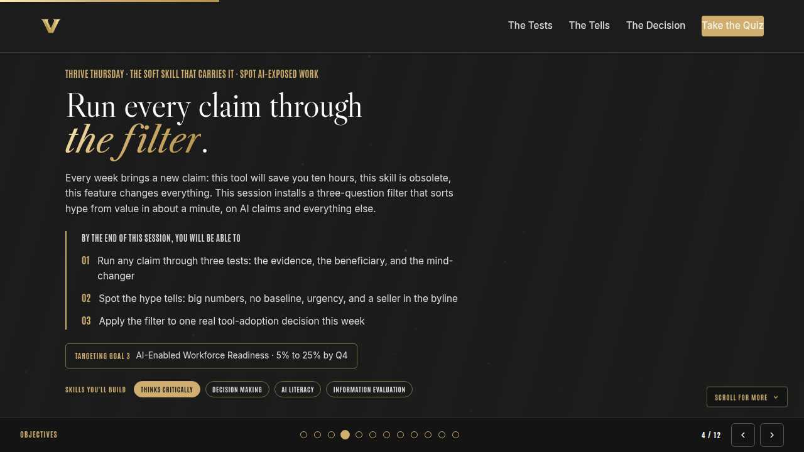
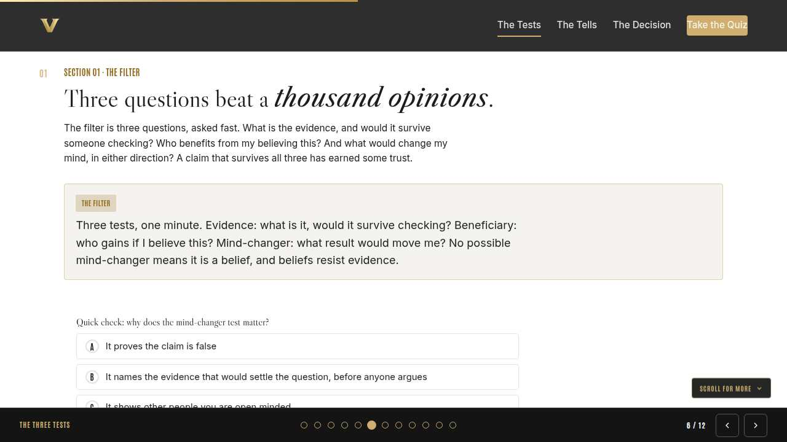
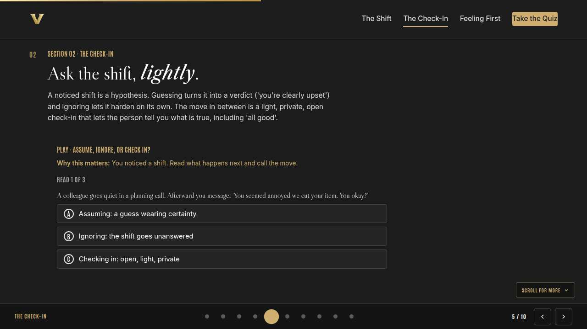
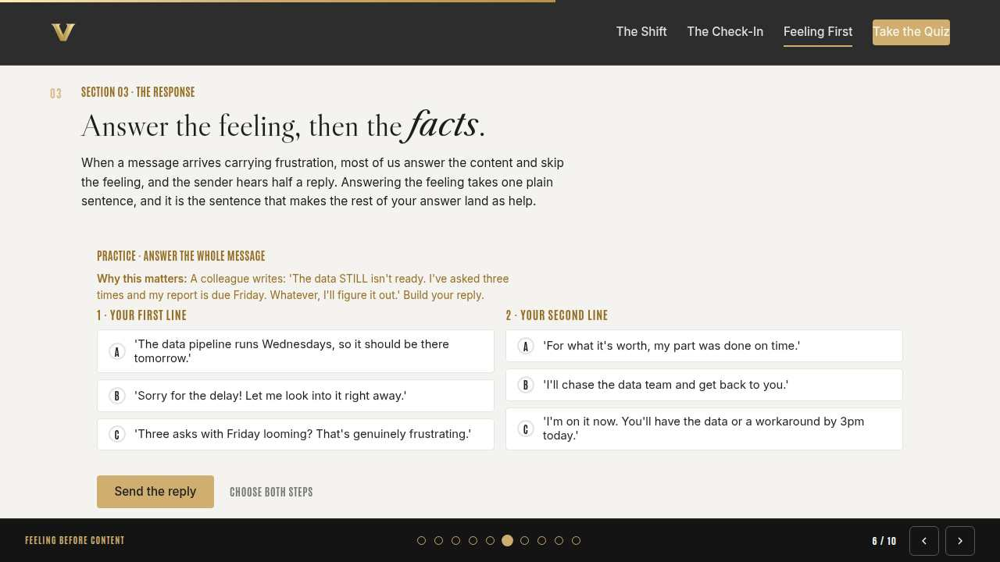
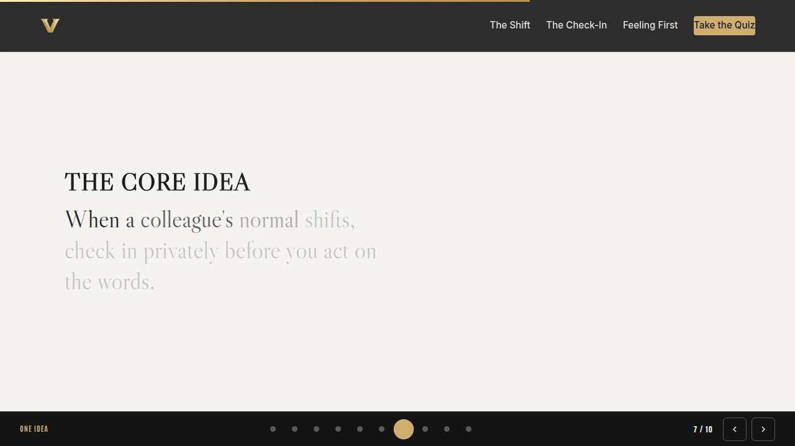
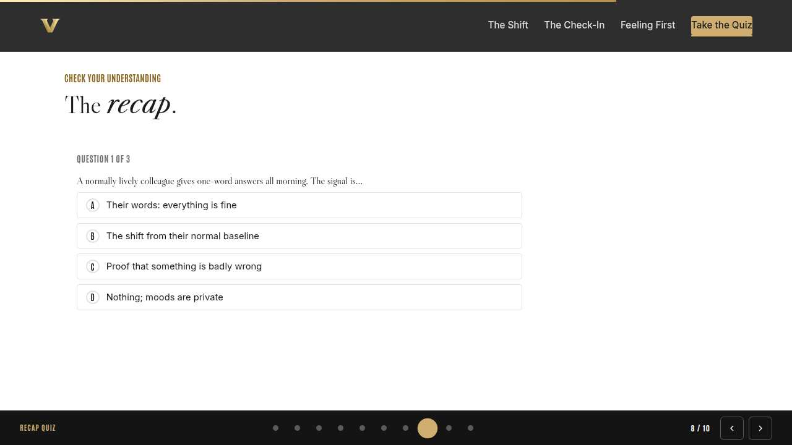
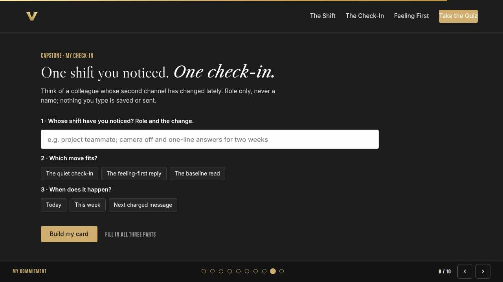
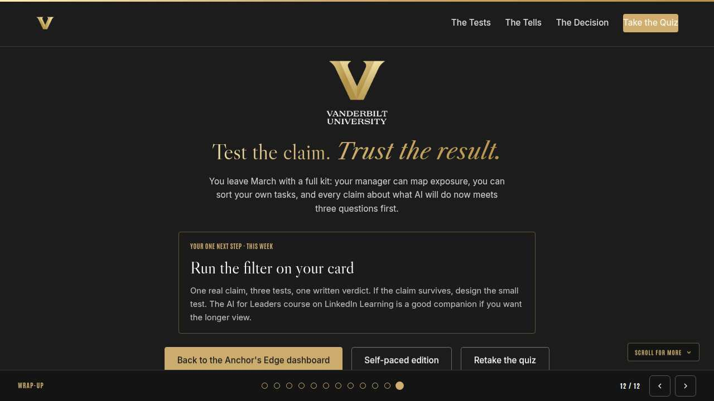

Vanderbilt · Anchor's Edge · ATD facilitator guide · print edition
The Second Channel, the facilitator guide

Run of show
| Screen | Full (min) | Core (min) |
|---|---|---|
| Welcome / QR | 2 | 1 |
| Why we're here | 2 | 1 |
| Objectives | 2 | 1 |
| The second channel | 9 | 6 |
| The check-in | 11 | 8 |
| Feeling before content | 9 | 6 |
| The core idea | 1 | skip |
| Recap quiz | 4 | 3 |
| Capstone commitment | 4 | 3 |
| Closing | 1 | 1 |
| Total | 45 | 30 |
The goal this month serves
Goal 2, Manager Effectiveness at Scale.
Audience
All Vanderbilt staff in the Anchor's Edge weekly rhythm; no one is assumed to manage people. Works for 6 to 40 on a call; breakouts run in pairs. No prerequisites; this session closes the week in March's Coaching as the Core Manager Behavior month.
Room setup
Virtual, instructor led: camera on, deck link in chat, breakouts of 2 available. Learners follow on their own screens via the welcome-slide link or QR. Nothing typed into the deck is saved or sent.
Materials
- Meeting platform with screen share and breakout rooms; deck link ready to paste in chat
- Facilitator machine with the facilitator edition open; notifications off
- Learners on their own devices with the learner link
- Chat open for share-outs; the capstone copy button pastes there cleanly
A week before
- Run the learner edition start to finish and do every interaction honestly; you will demo at least one live.
- Read this month's theme page on the Anchor's Edge dashboard so the goal tie-in is fluent.
- Send the invite with the learner link and one line on what to bring.
The day before
- Test screen share with the facilitator edition; confirm the notes rail is readable.
- Open the learner link on a second device; the QR must land there.
- Run the section interactions once so you can drive them without reading.
30 minutes before
- Welcome slide up as people join; link pasted in chat.
- Close every other tab; silence the machine.
- Breakout rooms pre-configured in pairs.
When things go sideways
If Screen share or the site fails mid-session: Paste the learner link in chat and narrate from your own browser; every interaction runs on learner devices without the share.
If Breakout rooms are unavailable: Run the breakout prompts as 60-second chat storms: everyone types their answer at once, you read the best three aloud.
If Someone shares a heavy personal situation live on the call: Receive it with one warm sentence, then protect them from the group: 'Thank you for trusting us with that; let's talk after.' Follow up privately and point to support resources where it fits.
If Someone objects that reading tone is mind-reading or overstepping: Agree with the caution: the skill is noticing a change and asking, never diagnosing. The check-in hands the meaning back to the person, which is the opposite of mind-reading.
Tough questions, ready answers
Q: Isn't this asking me to be my colleagues' therapist?
No. The move is a thirty-second check-in and one feeling-first sentence, both ordinary collegial behavior. Anything heavier gets a warm handoff toward real support, and knowing that limit is part of the skill. You are a colleague who listens well; that is the whole job.
Q: What if I check in and I'm wrong, and it gets awkward?
A light, open check-in has a built-in exit: 'all good' ends it with no harm done. People remember being noticed kindly far longer than they remember a guess that missed. The awkwardness lives in naming feelings for people, which is exactly what the check-in avoids.
Q: What about tone in email and chat, where there is no voice?
Baselines still work: message length, response speed, punctuation, the emoji that went missing. Read the change against that person's normal, the same rule as voice. Then move the check-in itself somewhere richer; a shift noticed in chat rarely untangles in chat.
Copy-paste templates
Pre-work invite (paste into the calendar invite)
Subject: Thursday, 45 minutes on hearing what isn't said. Bring the memory of one moment a colleague's tone told you more than their words. You will never be asked to name anyone. Live and interactive; have the session link open on your own screen.
7-day pulse (send one week after)
Subject: Did the check-in happen? Three lines, reply whenever: 1) Did the check-in on your card happen? 2) What did you learn that the words never said? 3) Whose baseline are you learning now?
After the session
Seven days out, send the pulse: 'Did the check-in on your card happen? What did you learn that the words never said? Whose baseline are you learning now?' Share-backs feed the month's story bank for the coaching theme.
Welcome / QR Full 2 min · Core 1
Get everyone into the deck on their own screen and set the tone: 45 minutes, live, hands on.
Say
“Welcome to Thrive Thursday. Scan the code or click the link in chat so this session runs on your screen too. Forty-five minutes, one focus: Empathy at work: hearing what isn't said.”
Do
- Slide up as people join; link pasted in chat every few minutes.
- State the norm once: type into your own screen, nothing you enter is saved or sent.
Watch for: People lurking without the deck open. The interactions only land if the deck is on their screen.
Transition: “Before the topic, thirty seconds on why Vanderbilt is asking for this hour.”

Why we're here Full 2 min · Core 1
Anchor the session in the Chancellor's charge and name the goal this month serves, inside one minute.
Say
“One sentence from the Chancellor sits over everything we do: Vanderbilt will define the great university of the 21st Century and be it. A century-defining university runs on thousands of working relationships, and hearing colleagues well is the human layer of Exceptional Core Operations. This month serves Goal 2, Manager Effectiveness at Scale.”
Do
- Read the mission line slowly, once; name the goal, once.
- No discussion here; the whole slide is under a minute.
Transition: “Here is what you will be able to do in 45 minutes.”

Objectives Full 2 min · Core 1
Set the contract for the session in about a minute; this slide is also the roadmap.
Say
“By the end of this session you will be able to: notice tone and energy shifts that carry more information than the words; check in with a light, open question instead of assuming what a shift means; answer the feeling in a message before answering its content. We take them in order, and each one has something to practice.”
Do
- Read the three objectives briskly; they double as the agenda.
- Point at the goal chip once, then move.
Transition: “First objective.”

The second channel Full 9 min · Core 6
Teach shift-noticing against a personal baseline: tone, pace, and energy over words.
Say
“Think about the last time a colleague said 'fine' and you knew it was anything but. You were reading the second channel: tone, pace, energy, everything around the words. Everyone broadcasts on it, and most of us only listen when it gets loud. The skill starts smaller than that: knowing a person's normal well enough to notice when it changes.”
Do
- Read the baseline rule from the card; it reframes quiet colleagues immediately.
- Share the In the room card; let the 'fine, whatever works' moment land before you say anything.
- Run the discussion prompt, then the breakout on the 'tell' they have learned to read, roles only.
Ask
“Whose baseline do you know best, and what is their tell?”
Expect:
- Quick answers about close collaborators
- A realization that they only know a few baselines
Respond: Both are useful. Baselines come free with attention, so you already own several. The gap is usually the colleagues you only ever meet in meetings.
Debrief: Shifts read against a baseline, and a shift is a hypothesis, never a verdict.
Watch for: Diagnosis creep: 'quiet means disengaged.' Pull it back every time. Noticing is the skill; the meaning belongs to the person.
Transition: “You noticed the shift. The next move decides whether noticing helps.”
Core path: Core: skip the breakout; collect two 'tells' in chat and move on.

The check-in Full 11 min · Core 8
Replace assuming and ignoring with the light, private, open check-in.
Say
“A noticed shift puts three moves on the table: assume, ignore, or ask. Assuming is a guess wearing certainty, and people read your silence as an answer anyway if you ignore it. The check-in is the third move, and it matches what Jack Zenger and Joseph Folkman found when they studied thousands of leaders for HBR: the best listeners are not silent nodders, they ask questions. 'You went quiet back there, anything you'd add?' costs thirty seconds and asks instead of guessing.”
Do
- Run Assume, ignore, or check in? live on everyone's screens.
- After round one, linger: the guess was private and kind and still a guess.
- Run the breakout: say a check-in line aloud in your own voice.
Ask
“What makes 'no need to answer' such a strong ending for a check-in?”
Expect:
- It removes the pressure to perform an answer
- It makes declining safe
- It proves the door is real
Respond: Right. An exit ramp makes honesty cheaper. Half the value of a check-in lands even when the answer is 'all good.'
Debrief: A real check-in is private and easy to decline, and it hands the meaning back to the person instead of guessing it for them.
Watch for: Scripted-sounding lines in the breakout. Push for their own voice; a borrowed phrase reads as a technique, and techniques get polite answers.
Transition: “Check-ins cover the shifts you see. The last section covers the feelings that arrive in writing.”
Core path: Core: run the trainer, skip the breakout, take one line from chat.

Feeling before content Full 9 min · Core 6
Train the feeling-first reply: one plain sentence answering the emotion before any facts or fixes.
Say
“Sometimes the second channel arrives in writing: capital letters in the middle of a message and a 'whatever, I'll figure it out' at the end. The reflex is to answer the content, because the content has an answer. A frustrated message is two messages, though, and if you only answer the facts, the person heard you ignore the other one. The Center for Creative Leadership teaches this move as reflecting: mirror back the feeling you heard before you touch the problem. One plain sentence does it, and then the facts land as help.”
Do
- Run Answer the whole message; two minutes for both lines, then send it.
- Ask one volunteer to read their outcome aloud, weak or strong.
- Point at the pattern: name the frustration plainly, then relief with a clock on it.
Ask
“Why does the quick apology in slot one still land badly?”
Expect:
- It is generic; it could answer any message
- It skips what they actually said
- Speed without acknowledgment reads as brush-off
Respond: Yes. The apology answers that a message arrived; the strong line answers what the message carried. People can tell which one they got.
Debrief: Feeling first, one plain sentence, then concrete help with a time attached. That order is the whole skill.
Watch for: Overwrought feeling-lines that sound like a script. One plain sentence beats a paragraph of validation; this is workplace listening, kept light.
Transition: “Quick recap, then you pick your person and build the check-in card.”
Core path: Core: everyone runs the builder solo; skip the read-aloud.

The core idea Full 1 min · Core skip
Land the one sentence the session exists to install.
Say
“If you keep one sentence from today, this is it. Read it once, out loud: When a colleague's normal shifts, check in privately before you act on the words.”
Do
- Pause two beats after reading; the word animation carries it.
Transition: “The recap makes it stick.”
Core path: Core: pass through in stride; the sentence reads itself.

Recap quiz Full 4 min · Core 3
Score the learning while it is fresh; wrong answers are teaching moments, not failures.
Say
“Three questions, on your own screen. Answer honestly; the explanations are where the learning sticks.”
Do
- Give the room 90 seconds to run it individually.
- Ask for a show of results in chat: how many got 3 of 3?
- Read out the explanation for whichever question drew the most misses.
Watch for: Rushing past the why lines. The explanations carry the teaching.
Transition: “Now point it at your real week.”

Capstone commitment Full 4 min · Core 3
Convert the session into one named, dated action per person.
Say
“Now make it real. One colleague whose second channel has shifted, role only, never a name. Pick the move, pick the window, build the card, and copy it somewhere you will see it this week. Two minutes, quiet, go.”
Do
- Two quiet minutes; everyone builds their own card.
- Invite two or three volunteers to read their card aloud or paste it in chat.
- Remind: copy the card somewhere you will see it this week.
Watch for: Vague entries. Nudge for a name-able situation and a real date.
Transition: “Last slide.”

Closing Full 1 min · Core 1
End with the next step and where this thread continues.
Say
“That closes the coaching week. Monday gave managers the coaching moment, Tuesday put growth on the record for everyone, and today built the listening underneath both. Run the check-in on your card, and bring what the second channel taught you into next week's sessions. If you want to keep pulling the thread, Sara Canaday's Coaching Skills for Leaders and Managers is this month's LinkedIn Learning pick, and the navigator-led GROW practicum is a friendly place to practice this kind of listening out loud. Same rhythm next week, still inside the coaching month; then April opens a new goal with Spot AI-Exposed Work.”
Do
- Point at the next-step card; one sentence.
- Name the rest of the week's rhythm: the other sessions echo this month's theme.
Generated from facilitator/notes.json. The on-screen facilitator edition lives at ./ alongside this guide.